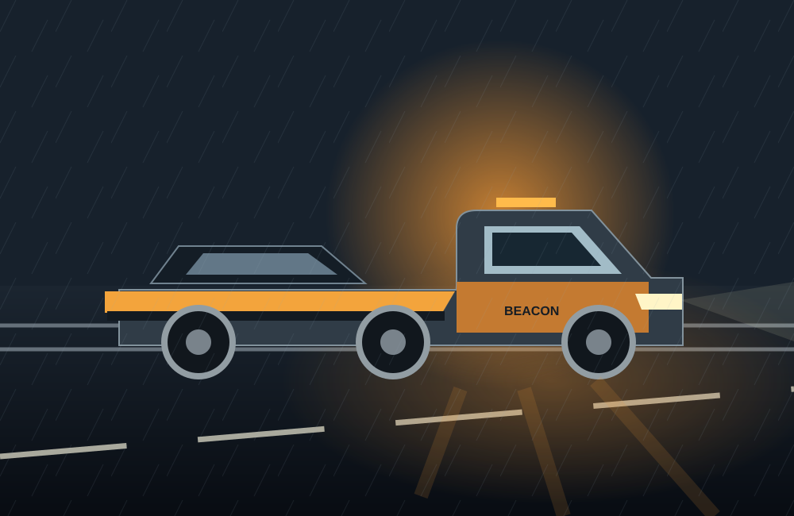

Breakdown recovery
Home, roadside or motorway. Taken to your garage or your driveway, your choice.
Talk to a driver ↗
24-HOUR RECOVERY · BRISTOL, M4 & M5
A real person. A clear price. A way home.
Whatever the hour, let's get you off the roadside.
DEMONSTRATION SITE · Sample phone number · No live dispatch or response-time promise
34MINAverage arrival*
24/7Every day of the year*
40 MILESCoverage radius*
19 YRSRecovering vehicles*
ROADSIDE. DRIVEWAY. MOTORWAY.
Home, roadside or motorway. Taken to your garage or your driveway, your choice.
Talk to a driver ↗Damaged and non-driveable vehicles, including insurance work. Call emergency services first if anyone is in danger.
Discuss recovery ↗Flat battery at the supermarket or on your drive. A roadside assessment before arranging a tow.
Ask about a jump start ↗Spare fitted where safe and suitable, or recovery arranged if roadside replacement isn't possible.
Get tyre assistance ↗Non-destructive entry where possible; a specialist locksmith where needed.
Ask about access ↗Call for professional advice on fuel drain or top-up. If you've misfuelled, avoid starting the engine.
Discuss fuel recovery ↗NO ROADSIDE SURPRISES
Sample prices include VAT. A complete quote is agreed by phone before a real recovery would set off.
Get a phone quote ↗Local tow · up to 10 miles£85
Each additional mile£2.40
Jump start£55
Roadside tyre change£65
Wrong fuel drainfrom £185
Motorway recovery is priced per job. Vehicle type, access and destination affect the quote. These are sample prices, not an offer or live estimate.
YOUR SAFETY COMES FIRST
Follow official roadside guidance and instructions from emergency services. Only move or exit when it is safe.
If possible, leave the carriageway and stop in a safe area. Turn on hazard warning lights. Never attempt repairs in a live lane.
If safe, exit on the side away from traffic and move behind a safety barrier, away from the vehicle. If you cannot exit safely, remain belted and call emergency services.
Use hazard lights. In poor visibility use sidelights as appropriate. Do not stand between your vehicle and approaching traffic.
When safe, describe the road, direction and a visible marker post. Do not walk along a motorway to find a marker.
BRISTOL IS HOME. THE ROAD IS OUR OFFICE.
Anything further, call to discuss long-distance recovery across the South West. This coverage list is illustrative, not live service availability.
Check your location by phone ↗THE RIGHT EQUIPMENT FOR THE JOB
For modern cars, EVs and vehicles that need all wheels off the road.
Quick jobs, jump starts and suitable roadside fixes.
Vans, motorhomes and complex recoveries, assessed individually.
Original fleet illustrations, not photographs or evidence of owned vehicles.
SAMPLE CUSTOMER STORIES / FICTIONAL
“He was there in twenty-five minutes and stayed calm the whole time.”Sarah, Portishead · Motorway recovery
“Quoted £85 on the phone and that was the price.”Michael, Bath · Local tow
“Drained it on my driveway and I drove it the next morning.”Tomas, Bristol · Wrong fuel
Supplied fictional review excerpts; not verified testimonials or arrival guarantees.
DAY OR NIGHT. START WITH A CALL.
Sample contact number · This page does not dispatch assistance.